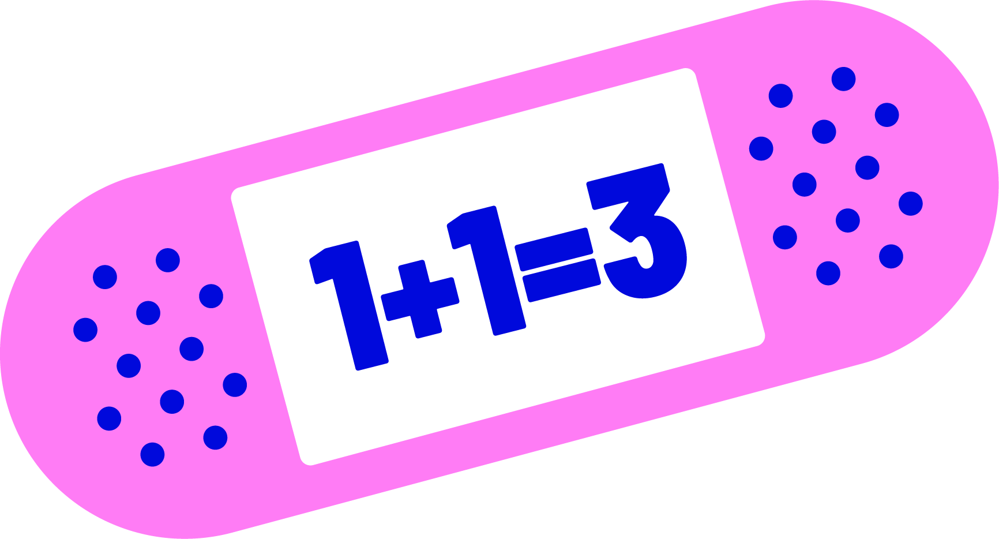
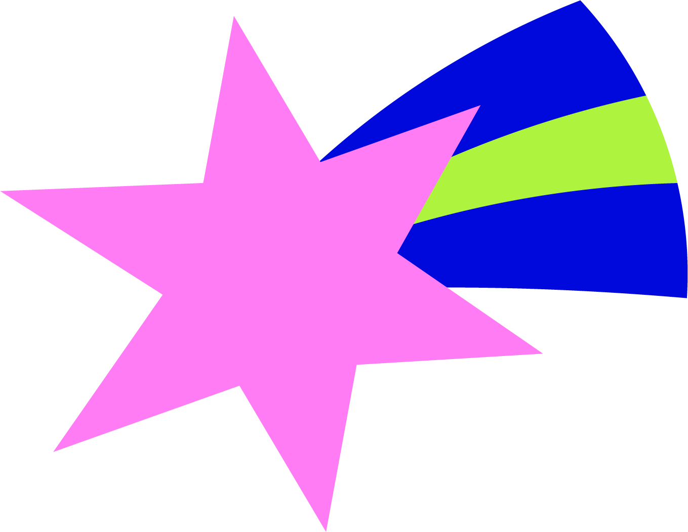
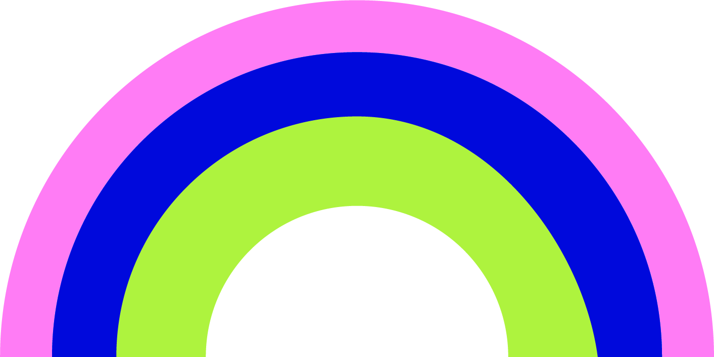

Ad Platform Digest
All news
Search
Social
The
Bi-Weekly
Brief
updates
platforms
min read

TL;DR
what matters this edition

Past editions
That's a wrap
Spot something worth testing?
Share it in the channel!
Hope this was useful.
See you in two weeks✨
